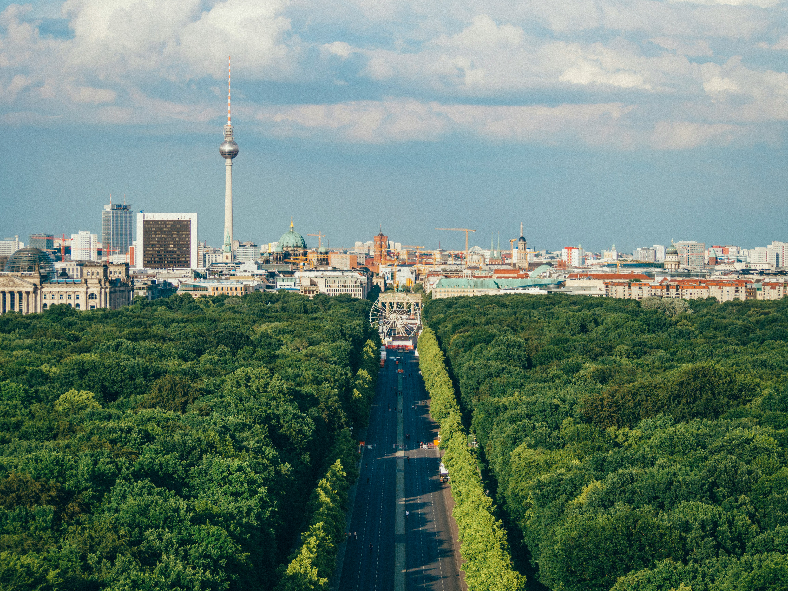
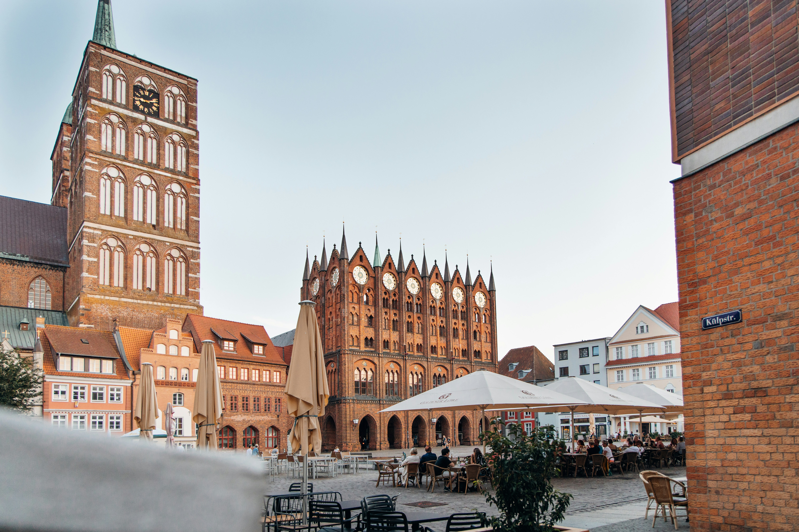
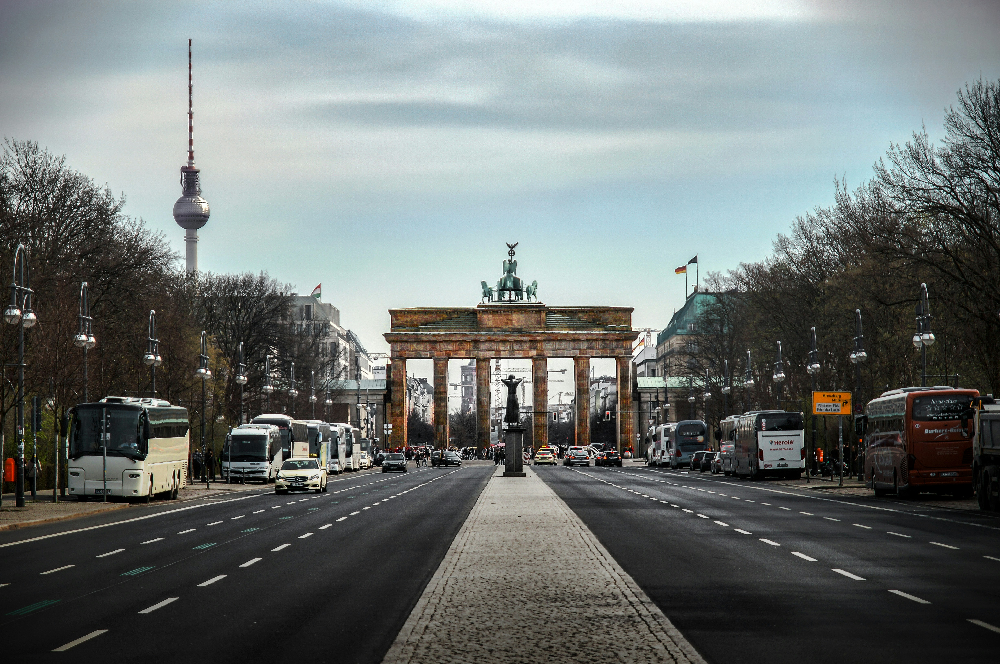
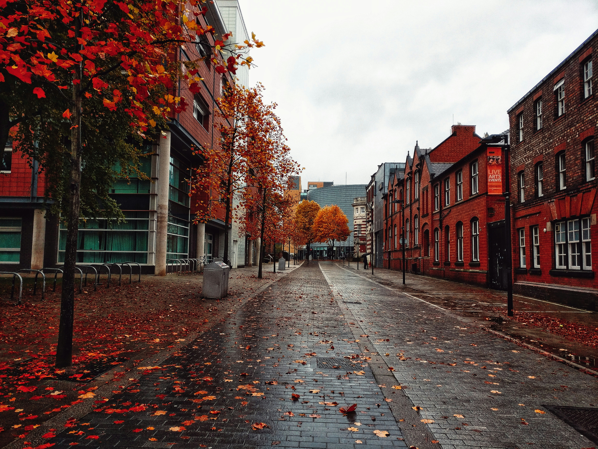
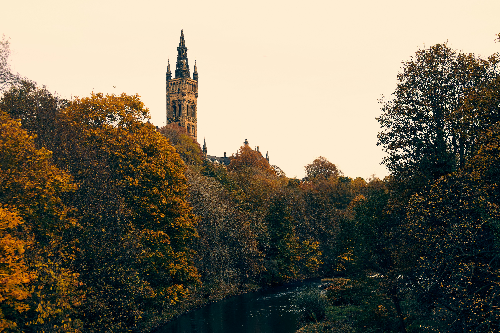

Present Day: Back to Berlin

After six seasons as an ensemble member at the Theater Vorpommern in Stralsund, I moved back to Berlin in December 2025 to continue my freelance work. Since returning to Berlin, I have worked as a guest souffleur (prompter) at Deutsche Oper Berlin, jumped in to cover piano lessons for kids and adults at various music schools, helped professional singers prepare for upcoming role debuts, and accompanied singers and ensembles.
2020 - 2025: Seaside Life in Stralsund

In February 2020, just two weeks before the first Covid-19 lockdown in Germany, I moved to Stralsund to join the ensemble at Theater Vorpommern, which performs in Stralsund, Greifswald, and Putbus in the northern German state of Mecklenburg-Vorpommern.
Once the lockdown restrictions eased and rehearsals and performances started up again, I became a busy and valued member of the team. As well as tackling favorites of the opera, musical, and operetta repertoire over six seasons, I worked on modern pieces like Glanert's Drei Wasserspiele, Britten's Midsummer Night's Dream, and Hartmann's Simplicius Simplicissiumus.
I brought his composing and conducting skills with me to Theater Vorpommern and collaborated on the development of several theater pieces: Sprich mit mir!, Willkommen im Wunderlift, and In der Oper wird nicht gemordet!. In addition to conducting and playing staging rehearsals, I performed with the Philharmonic Orchestra Vopommern on and below the stage, and performed many chamber music concerts with my colleagues.
During my time in Stralsund, I also headed south occasionally to work as a guest at other theaters. At the Deutsche Oper Berlin, I worked as a musical assistant to Marc Albrecht for the 2023-24 main stage production of Benjamin's Written on Skin and guested regularly in the Tischlerei at Deutsche Oper, including as musical director of the world premiere of Arne Gieshoff's Bärin. I also guested at Opera de Tenerife and took part in the O Festival in Rotterdam.
I am also proud to have supported my partner Lisa's project Women Who Composed, which began with livestreamed concerts from our apartment during the pandemic and has blossomed into an extensive blog and research project.
2014 - 2020: A Fresh Start in Berlin

After a quick stop off in Virginia to get married, I moved with my new wife, Lisa Newill-Smith, from Manchester to Berlin.
As well as continuing to train and study piano privately, I began a busy life of freelance performing, conducting, coaching, and arranging. My work took me across Germany, performing with established theaters, choirs, and orchestras, as well as independent groups and individuals.
During my time in Berlin, I collaborated with Deutsche Oper Berlin, Europa Chor Akademie, Indemini Festival, Cultura Immanuel Regensburg, Skycradle Hamburg, Alltagsoper, Passagio Oper, the Diplomatic Choir Berlin, the Embassy Singers, Amici Arts, Balance Arts Berlin, and Neue Philharmonie.
2009 - 2014: Studying in Manchester

After graduating from the University of Manchester with a first class Bachelor of Music with honors in 2012, I completed a Master of Composition in 2014. As an undergraduate, my curriculum included courses on accompanying, performance practice, solo performance, composition, and aesthetics.
Throughout my time in Manchester, I remained a busy member of the Manchester University Music Society, performing in orchestral and choral concerts, theatrical productions, and taking on the role of secretary to the society.
I continued to perform with the National Youth Orchestra of Scotland, and worked as musical director of Chimera Opera Group in Rochdale, where I met my partner Lisa Newill-Smith while working on Hansel and Gretel.
In my free time, I worked as a math tutor with the Tutor Trust and volunteered as a youth mentor with Reach Out!.
Where it All Began: Glasgow

Although music is now a huge part of my life, I didn't start making music until secondary school. At the High School of Glasgow, I picked up the tuba, followed quickly by singing and piano lessons. My love for music grew quickly, and I studied Higher and Advanced Higher music at school.
I attended the Royal Conservatoire of Scotland (formerly R.S.A.M.D.) Junior programme and performed with youth ensembles across Scotland, including the National Youth Orchestra of Scotland and the National Youth Choir of Scotland. I also sang with the choir of St. Mary's Cathedral Glasgow. Even as a teenager, I began accompanying and leading rehearsals for community choirs in Glasgow.
In my final year of school, I was named Young Musician of the Year at the High School of Glasgow. After graduating, I took a year to refine my music skills and passed ABRSM grade 8 exams in tuba, piano, and voice with distinction.